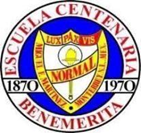
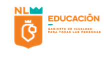
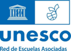
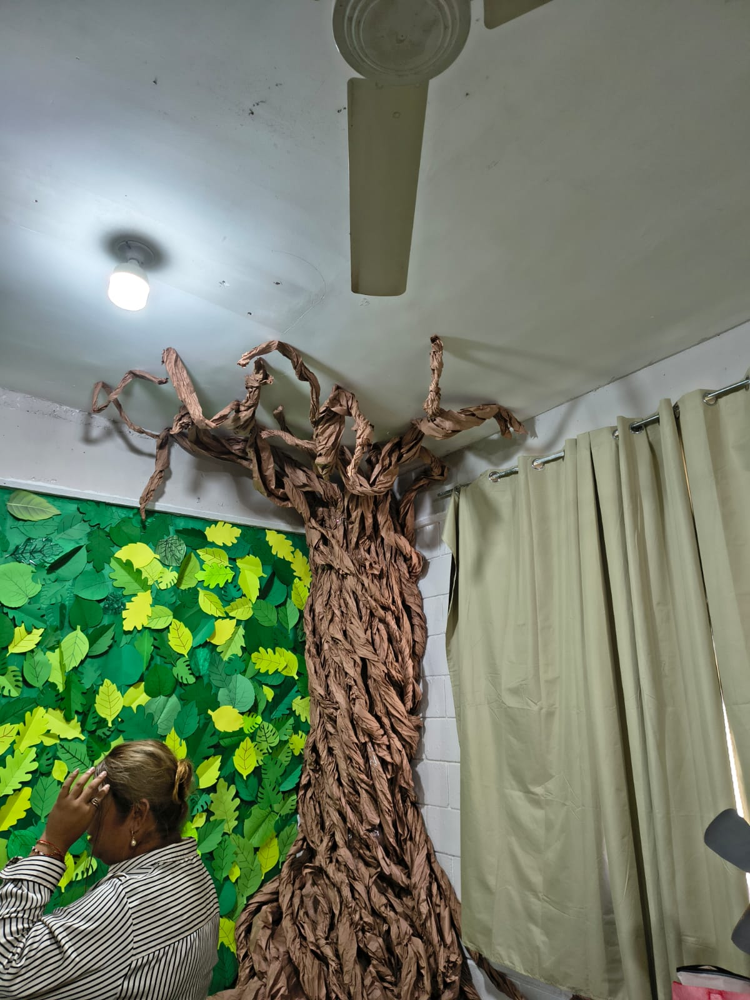

🌬️ Proyecto institucional · Exposición Cintermex
RespiraTech
Una experiencia educativa impulsada desde la Escuela Normal Miguel F. Martínez para investigar la calidad del aire, crear prototipos STEAM y compartir soluciones con la comunidad escolar. Esta página muestra la participación de la primaria Alberto Fernández Ruiloba dentro de una red de escuelas que presentan el proyecto institucional RespiraTech.
Identidad normalista
Escuela Normal Miguel F. Martínez
Esta sección funciona como sello institucional: muestra los emblemas y datos básicos para que la página se reconozca como parte del proyecto de la Escuela Normal Miguel F. Martínez.


Escuela Normal Miguel F. Martínez
Centenaria y Benemérita · Ciclo Escolar 2025-2026 · Licenciatura en Educación Primaria
en práctica
didáctica
STEAM
evidencias
comunidad
Ambientación general
El árbol de RespiraTech
Este elemento forma parte de la exposición general, por eso se muestra como ambientación institucional y no dentro de un solo grado.
Un espacio común para todos los proyectos
El árbol representa la relación entre aire, naturaleza, comunidad escolar y prototipos STEAM. Funciona como entrada visual para la experiencia completa de RespiraTech.

Árbol de ambientación general
ABPC / ABI-STEAM
Metodología del proyecto
El proyecto integra investigación, acción, prototipado, comunicación y socialización de evidencias para fortalecer el aprendizaje situado.
Planeación
Se identifica la problemática, se recuperan saberes previos, se delimitan preguntas guía y se organizan rutas de trabajo.
Acción
Los estudiantes investigan, registran información, experimentan, diseñan y construyen prototipos vinculados con la calidad del aire.
Intervención
Se presentan productos, se comunican hallazgos, se socializan evidencias y se proponen acciones para la comunidad escolar.
Proyectos por grado
Una escuela, cuatro rutas para cuidar el aire
Selecciona una tarjeta para abrir el apartado del grado. Cada proyecto cuenta con espacio para problemática, propósito, proceso, producto, fotos y videos.
🌱
Guardianes del Aire
Jardín vertical y plantas purificadoras para el aula.
Ver proyecto→
🪴
Pequeños guardianes
Purificadores de plantas con materiales reciclables.
Ver proyecto→
🚦
Semáforo del aire
Prototipo para comunicar la calidad del aire con colores.
Ver proyecto→
🤖
Wall-e al rescate
Robot que riega una planta purificadora con energía solar.
Ver proyecto→
1.º grado · ABPC
Guardianes del Aire: Proyecto RespiraTEC
El alumnado identificó contaminantes invisibles y construyó un jardín de plantas para favorecer la conciencia ambiental.
Problemática
La presencia de polvo y contaminantes invisibles en el aire de la escuela afecta la salud de los alumnos, quienes desconocen cómo identificar y mejorar la calidad del aire en su salón.
Propósito
Fomentar la conciencia ambiental mediante la investigación científica y la creación de un prototipo de jardín de plantas que purifique el aire del aula.
Cómo se trabajó
El grupo exploró la presencia del aire, realizó muestras de polvo, observó plantas, decoró macetas y participó en la construcción del jardín vertical.
Producto final
Jardín vertical con plantas purificadoras y evidencias de investigación adaptadas al nivel de primer grado.
Galería de primer grado
Cargando evidencias...
2.º grado · ABI-STEAM
RespiraTech: Pequeños guardianes del aire
El alumnado investigó plantas purificadoras y elaboró un prototipo ecológico con materiales reciclables y foami moldeable.
Problemática
Existe poco conocimiento sobre las plantas que ayudan a purificar el aire y su importancia para el cuidado del medio ambiente.
Propósito
Investigar plantas que contribuyen a la purificación del aire, analizar su importancia y elaborar un prototipo ecológico llamado RespiraTech.
Cómo se trabajó
Se observaron videos de Ariel, se investigaron plantas purificadoras, se elaboraron bocetos, se clasificaron materiales reciclables y se representaron plantas mediante producciones artísticas.
Producto final
Purificador ecológico con materiales reciclables, foami moldeable y comunicación oral/escrita sobre el cuidado del aire.
Galería de segundo grado
Cargando evidencias...
3.º grado · ABPC + STEAM
RespiraTech: Semáforo de calidad del aire
Un semáforo físico comunica si el aire está en verde, amarillo o rojo, apoyándose en un instrumento real de detección usado por el docente normalista.
Problemática
En la zona metropolitana de Monterrey la calidad del aire suele empeorar por actividades humanas y condiciones del entorno; esto también afecta a las y los estudiantes.
Propósito
Que el alumnado indague causas, consecuencias y acciones para mejorar o cuidar el aire, y desarrolle un prototipo STEAM: un semáforo de calidad del aire.
Cómo se trabajó
Se investigaron causas y consecuencias, se acordaron reglas para los colores del semáforo, se diseñó el prototipo y se relacionó con lecturas reales del instrumento docente.
Producto final
Semáforo con sistema de engranaje que los alumnos giran según el resultado del detector de calidad del aire.
Galería de tercer grado
Cargando evidencias...
4.º grado · ABI-STEAM
Wall-e y su planta al rescate
El alumnado construyó un robot con mecanismo de riego para una planta purificadora de aire, alimentado con energía solar.
Problemática
La calidad del aire en el área metropolitana ha avanzado a niveles preocupantes, amenazando la salud de los estudiantes.
Propósito
Construir un robot con un mecanismo que riegue una planta purificadora de aire, alimentado con energía solar, para fortalecer habilidades matemáticas, botánicas y artísticas.
Cómo se trabajó
Se introdujo la problemática, se investigaron alternativas con plantas, se organizaron materiales, se diseñó el robot y se vinculó el prototipo con energía solar.
Producto final
Robot inspirado en Wall-e que cuida una planta purificadora y representa una solución creativa ante la mala calidad del aire.
Galería de cuarto grado
Cargando evidencias...
Planeaciones y evaluaciones
Documentación del proyecto
Este apartado concentra planeaciones, rúbricas, evaluaciones y documentos de apoyo para que el sitio muestre el proceso completo, no solo las fotografías finales.
Banco multimedia
Evidencias del proceso y exposición
Esta sección funciona como una galería general para fotos, dibujos de Ariel, prototipos, stands y videos. Las imágenes se pueden abrir en grande.
Cargando banco multimedia...